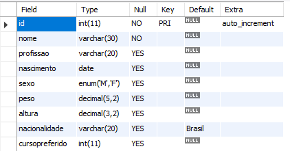
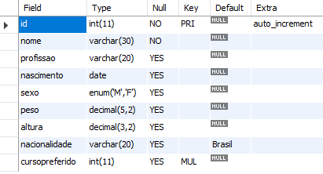
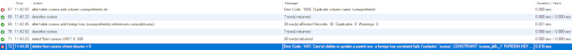
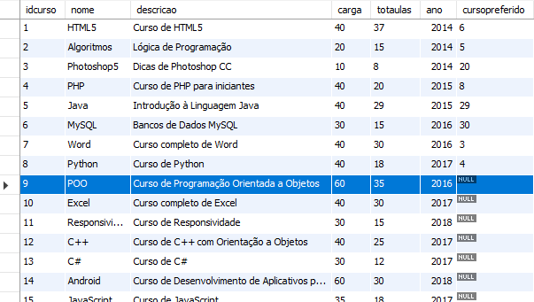
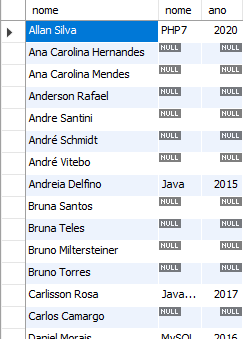
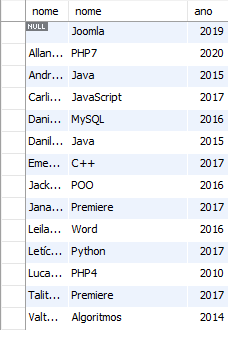

🧠 ENGINE que suportam chave estrangeiras:
Engine compativeis com chave estrangeiras:
- MySAM
- InnoDB
- XtraDB
🧠 ACID: As quatro principais regras de atomicidade
🧠 Modelo de Relacionamento de 1 para n(muitos)
🧠 Adicionando cursopreferido
use cadastro;
describe cadastro;
alter table gafanhotos
add column cursopreferido int;

🧠 Informando que o campo "cursopreferido" é uma chave estrangeira.
alter table gafanhotos
add foreing key(cursopreferido)
referece cursos(idcursos);
🧠 Inserindo uma chave:
alter table gafanhotos
add foreign key (cursopreferido)
references cursos(idcurso);
desc gafanhotos;

🧠 Leitura em liguagem natural:
update gafanhotos set cursopreferido = 6 where id = 1;
“Atualize a tabela gafanhotos,e dentro dela, mude o valor da coluna cursopreferido para 6, mas somente para o registro onde o campo id é igual a 1.”
update gafanhotos set cursopreferido = 6 where id = 1;
inserir gafanhotos se cursopreferido for igual a 6 enquanto id for 1
É possível fazer manualmente usando a tabela que fica abaixo de sua área de comandos do workbench
🧠 Integridade referencial:
É quando você não consegue deletar um campo que se relaciona outro.
Como por exemplo:
delete from cursos where idcurso = 6;
Neste caso o curso de idcurso = 6 não vai ser apagado, pois ele já possui relação com cursofavorito
🧠 Mensagem de erro aparece

Agora se escolhermos um campo que não tem relacionamento:

🧠 Vamos usar novamente o comando:
delete from cursos where idcurso = 28;
select*from cursos;
neste caso escolhi o 28, pois o 9 já estava preenchido no cursopreferido da tabela gafanhotos
🧠 Join e On
Select gafanhotos.nome, cursos.nome, cursos.ano
from gafanhotos join cursos
on cursos.idcurso = gafanhotos.cursopreferido;
O que isso significa: Você vai selecionar a tabela gafanhotos do campo nome, tabela cursos do campo nome, e tabela cursos do campo ano.
(ON) fazer uma relação entre cursos.idcurso com gafanhotos campo cursopreferido.
🧠 Abreviando e criando relações entre as tabelas com Inner Join:
select g.nome, c.nome, c.ano
from gafanhotos as g inner join cursos as c
on c.idcurso = g.cursopreferido
order by g.nome;
única parter que não pode ser abreviada é o que fica depois do from e as palavras que ficam após o ponto.
🧠 Mostrando a tabela do lado Left (Gafanhotos)
select g.nome, c.nome, c.ano
from gafanhotos as g left outer join cursos as c
on c.idcurso = g.cursopreferido
order by g.nome;

🧠 Mostrando a tabela do lado Right (Cursos)
select g.nome, c.nome, c.ano
from gafanhotos as g right outer join cursos as c
on c.idcurso = g.cursopreferido
order by g.nome;
